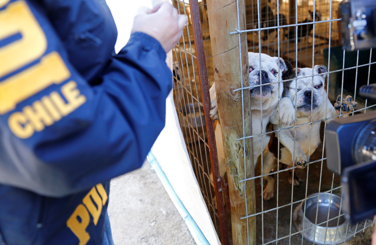

La crueldad hacia los animales, también llamada crueldad animal, abuso animal o maltrato animal,es el comportamiento irracional de una persona hacia un animal con la finalidad de causarle sufrimiento, estrés o incluso la muerte.Los mismos van desde la negligencia en los cuidados básicos hasta la tortura, la mutilación o la muerte intencionada.

El maltrato animal se puede clasificar en dos clases: el directo y el indirecto. El maltrato animal directo se produce cuando cualquier persona tiene una participación directa en provocar dolor, tortura, falta de atención o la muerte de un animal. Por el contrario, el maltrato animal indirecto no requiere la participación directa de la persona, sino la observación de maltrato y omisión de su deber de impedirlo, es decir, es una participación pasiva.
Hace cinco años entró en vigencia la Ley Cholito, la cual endureció las penas para el delito de maltrato animal y abandono. Durante el año 2021 hubo un aumento en este tipo de delitos, cerrando en 2.661 casos de maltrato y/o abandono animal.
Se calcula que en todo Chile hay aproximadamente 3.6 millones de perros y 1.2 millones de gatos abandonados. De esa cifra, entre el 5% y el 7% de esos animales no tendría un dueño conocido, tomando como referencia los datos aportados por la Subdere(Subsecretaría de Desarrollo Regional) y el Censo de 2017.
Esta realidad de abandono preocupa tanto a agrupaciones animales como veterinarios, pues la Ley de Tenencia Responsable de Mascotas, conocida popularmente como "Ley Cholito", no redujo el número de animales callejeros.
Al igual que los animales se encuentran ahí para nuestra compañía, nosotros debemos estar ahí para ellos y una manera de hacerlo es conociendo y satisfaciendo sus necesidades.
Si tienes la posibilidad, cuida una mascota que ha sufrido abandono. Muchas de ellas son abandonadas en refugios por diversas razones.
Haz lo que puedas para evitar que alguien maltrate a un animal. Pero sé sensato y no te pongas en peligro, ya que no sabemos los límites de otras personas.
Si eres testigo de cualquier forma de crueldad animal, denúncialo a la policía u otras autoridades. Actúa de inmediato para evitar más crueldad.
Da un buen ejemplo con los animales. Muestra a los niños, niñas y a tu comunidad, cómo tratar a los animales con amor y consideración.
Las leyes de bienestar animal más estrictas y las penas más severas darán lugar a menos casos de crueldad. Si puedes, dale refugio a un animal que lo necesite.
Ayuda a las personas a comprender que pueden intervenir en situaciones en las que se descuida o incluso se atormenta a los animales.
Cuando adquieras productos de belleza y de otro sector, asegúrate de que cuente con las certificaciones necesarias, estas avalan una producción responsable.
Trata de elegir prendas de vestir elaboradas a base de textiles y materiales sintéticos obtenidos de métodos sustentables.
A pesar de que ya se ha prohibido en muchos países, en otros continúan utilizando animales como principal atractivo.
Compartir, difundir información, denunciar, sensibilizar o unirse a un grupo u organización que trabaje en promover los derechos animales, es otra forma en la que puedes impulsar acciones de prevención.

La solución a esto seria aumentar el nivel de las sanciones y preocuparse de la protección y un tratamiento hacia los animales agredidos,golpeados,abandonados. También un punto importante es no adoptar un animal como mascota si no habrá preocupación,empatia,respeto y preocupación por el.